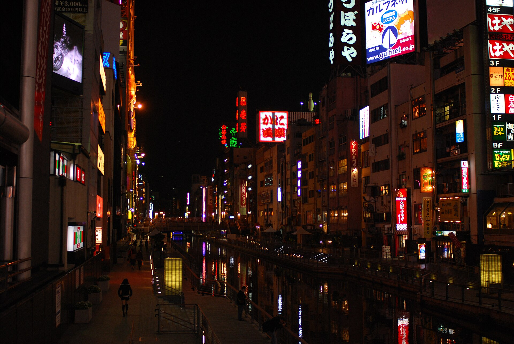
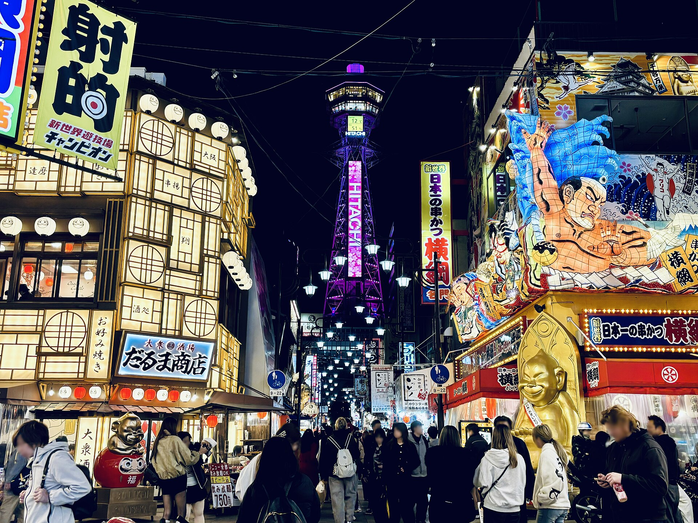
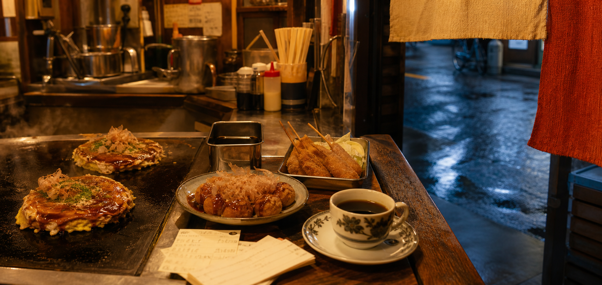

입국·수하물 60~90분 예상
KIX 교통 공식 안내 ↗지금 갈 곳
--:--일본 시각
위치 권한 없이도 동네를 선택하면 됩니다.
지금 갈 만한 곳을 고르는 중…
추천 기준 · 오프라인 사용
일본 시각, 선택한 동네, 식사 시간, 필수·보관함·오늘 일정, 방문 완료 여부를 함께 봅니다. 가까운 후보를 우선하며 예약과 월요일 공항 이동 여유를 남깁니다. 지도 거리는 직선거리이고 길찾기의 실제 이동과 다릅니다.
영업시간은 저장된 참고 정보입니다. 임시 휴무·대기·실시간 열차는 출발 전에 가게 또는 길찾기에서 확인하세요. 다시 열면 자동 갱신하지만 사이트를 닫은 동안에는 알림을 보내지 않습니다. 위치는 버튼을 눌렀을 때만 확인하고 서버에 전송하지 않습니다.
한 번 열어둔 화면은 연결이 끊겨도 사용할 수 있습니다. 다만 지도 타일·새 길찾기는 인터넷이 필요하며, 방문 기록은 이 브라우저에만 저장됩니다. 브라우저 데이터를 지우면 삭제되므로 일정의 JSON 백업을 이용하세요. 중요한 QR·숙소 출입 안내는 별도 스크린샷으로 보관하세요.
음식점 지도
검색 · 거리 · 보관함 필터
겹치는 메뉴 라벨은 자동으로 줄어듭니다. 핀을 누르면 가게명·메뉴·평점을 볼 수 있어요. 평점은 타베로그의 저장된 참고값이며 실시간이 아닙니다.
직선거리 기준 정렬 · 일부 위치는 지역 단위의 참고 좌표입니다. 핀만 믿고 건물로 이동하지 말고 가게 이름 길찾기에서 지점·영업시간을 확인하세요.
01
출발 전
02
예약 숙소
9월 5–7일 · 성인 3명 · 1객실LIVE MAP · 宿
다이코쿠초역 도보 3–4분
숙소 주변 지도
03
음식점 79곳
지역·종류·평점으로 찾기04
토·일·월 전체 일정
장소를 추가하고 시간을 바꾸세요.토요일
고정 출발KIX 15:00 → 숙소 체크인 17:30권장 마감 23:00
내 토요일
일요일
종일08:00부터 시작 가능권장 마감 22:00
내 일요일
월요일
출국13:00 난바 출발 → KIX 14:0013:00 뒤 추가 불가
내 월요일
05
관광지
06
살거리
가챠·오리파·TCG·게임센터·굿즈·선물07
유흥가
술·야경·성인 구역·공영경기·파친코08
오사카 여행 팁
필요한 항목만 눌러 확인
14:00월요일 KIX 도착 목표
110경찰
119구급·소방
3장ICOCA는 1인 1장
00 · 입국 준비Visit Japan Web — 앱 설치 없이 3명 각자 QR＋
무료 공식 웹서비스카드번호·결제 요구는 가짜 사이트입니다.
일본 입국심사와 세관 신고를 출발 전에 작성해 하나의 2D 코드(QR)를 만드는 서비스입니다. 별도 앱을 설치하지 말고 vjw.digital.go.jp만 이용하세요. 친구 3명은 각자 계정에서 자기 여권·신고를 완료하고 각자의 코드를 준비하는 방식이 가장 확실합니다.
- 01각자 계정 생성여권 정보·직업·거주 국가와 도시
- 02입국 예정 등록날짜·KIX·편명·목적·체류기간·숙소
- 03입국·세관 작성질문과 휴대품·별송품 신고까지 완료
- 043명 코드 확인출발 전에 각자 휴대폰에서 표시되는지 확인
KIX 도착 후안내에 따라 여권과 2D 코드를 입국 KIOSK/심사에서 사용 → 수하물 수취 → 세관 전자신고 단말기에서 여권과 같은 코드를 스캔 → e-Gate 통과
- 전자 신고를 해도 세관 직원이 수하물을 검사할 수 있습니다.
- 휴대폰 문제에 대비해 여권과 기내에서 받은 종이 세관신고서도 버리지 마세요. 종이 신고도 계속 사용할 수 있습니다.
- 입력 완료 뒤 이름·여권번호·편명·숙소를 세 사람이 서로 한 번씩 대조하세요.
01 · 공항 이동KIX ↔ 난바는 난카이로 단순하게＋
공식 기준 KIX에서 난바까지 라피트는 약 34–39분, 공항급행은 약 43분입니다. 좌석이 필요한 날은 라피트, 시간 유연성이 중요하면 공항급행을 먼저 비교하세요.
- 간사이공항역은 터미널 1과 에어로플라자 2층에 연결됩니다.
- 터미널 2라면 무료 셔틀 이동시간 7–9분을 추가합니다.
02 · 시내 교통ICOCA 3장 + 패스는 그날 비교＋
ICOCA는 열차·버스와 IC 마크 가맹점에서 쓸 수 있지만 한 장으로 여러 사람의 운임을 결제할 수 없습니다. 성인 3명이 각각 한 장씩 준비하세요.
- Osaka Metro 역에서 현금 충전 가능, 최대 잔액은 ¥20,000입니다.
- 토·일에는 Metro·City Bus 1일권 가격과 그날 이동 횟수를 비교하세요.
03 · 음식점3명은 대기·좌석·주문 규칙 먼저＋
작은 라멘·스시·이자카야는 3명이 나란히 앉기 어려울 수 있습니다. 입장 전에 “3명 함께” 대기시간과 분리 착석 가능 여부를 확인하세요.
- 인기점은 오픈 직전이나 14–17시 사이를 노립니다.
- 이자카야는 1인 1음료, 오토시·테이블 차지가 있는지 주문 전에 확인합니다.
- 팁 문화는 없으므로 영수증 금액만 결제하면 됩니다.
04 · 결제카드 하나만 믿지 말고 현금 분산＋
교통카드·신용카드·현금을 나눠 들고, 작은 식당·오리파·가챠·게임센터용 동전을 별도로 둡니다. 3명 공용비는 한 사람이 결제하고 즉시 메모하면 정산이 가장 빠릅니다.
- 가챠·오리파·파친코는 체험 상한을 출발 전에 정합니다.
- 현금 추가 인출은 합의 없이 하지 않는 규칙이 실용적입니다.
05 · 면세·쇼핑여권 원본과 수하물 공간을 같이 계산＋
이번 여행일은 2026년 11월 1일 제도 변경 전이므로 참여 매장에서 여권을 제시하는 현행 즉시 면세 방식입니다. 매장별 당일 세전 ¥5,000 이상 여부와 봉인·반출 조건을 확인하세요.
- 직접 국제우편으로 보낸 물품은 2025년 4월부터 면세 대상이 아닙니다.
- 가격표 사진, 영수증, 카드 슬립은 출국까지 보관합니다.
06 · 9월 날씨더위·습도·태풍을 같은 날 확인＋
오사카의 9월은 더위와 습도가 남고 태풍 가능성도 있는 시기입니다. 출발 전날과 매일 아침 기상·철도 운행을 다시 확인하세요.
- 목마르기 전에 물을 마시고 염분을 보충합니다.
- 정오에는 지하상가·Metro·쇼핑몰을 이동 동선으로 활용합니다.
- 작은 우산, 얇은 겉옷, 보조배터리를 한 가방에 둡니다.
07 · 짐월요일은 체크아웃 즉시 맡기기＋
호텔 보관 가능 시간을 먼저 확인하고, 안 되면 난바역 보관소나 코인락커를 사용합니다. 대형 락커는 빨리 차므로 오전에 확보하세요.
- 귀중품·깨지는 물건은 락커에 넣지 않습니다.
- 짐 보관 서비스의 보험·보상 조건은 업체별로 다릅니다.
08 · 매너·안전호객은 지나가고 흡연은 지정 장소만＋
오사카시는 길거리 흡연이 금지되어 있고, 2025년 4월부터 객석 30㎡ 초과 음식점은 원칙적으로 실내 금연입니다. 흡연실 표지를 확인하세요.
- 호객이 안내하는 술집·카지노는 따라가지 않습니다.
- 토비타신치 등 성인 구역에서는 촬영하지 않습니다.
- 경찰 110, 구급·소방 119, JNTO 24시간 핫라인 050-3816-2787.
09 · 월요일 출국13:00 난바 출발선을 넘기지 않기＋
이 가이드의 안전선은 난바 13:00 출발, KIX 14:00 도착, 16:00 국제선 출발입니다. 일정 카드의 종료 예상이 13:00을 넘으면 장소를 빼거나 시작 시각을 당기세요.
- 아침에 항공사·터미널·열차 운행을 재확인합니다.
- 면세품·수하물 정리가 많으면 난바 출발을 더 당깁니다.
- 터미널 2 항공편은 셔틀 이동시간을 별도로 확보합니다.
10 · 날짜별 결론할인은 일요일 하루에 몰아쓰기＋
라피트 디지털 티켓과 부대 쿠폰만 챙기고, 저녁 이동은 ICOCA로 처리합니다.
관광 3곳 이상이면 Osaka Amazing Pass, 가까운 시설 2곳 위주면 e-Pass+교통비를 비교합니다.
월요일 휴관 시설이 많고 오전만 쓸 수 있어 ICOCA와 개별 입장권이 대체로 낫습니다.
주유패스 1일권은 1인 ¥3,500입니다. 계산 결과에는 포함 노선 교통비와 음식·쇼핑 우대가 들어가지 않으므로 실제 절약액은 더 커질 수 있습니다.
11 · 패스 비교주유패스·e-Pass·Metro 1일권은 역할이 다름＋
Osaka Amazing Pass는 1일 ¥3,500·연속 2일 ¥5,000으로 약 40개 시설과 대상 전철·버스를 묶습니다. Osaka e-Pass는 1일 ¥2,400·연속 2일 ¥3,000으로 25곳 이상을 이용하지만 교통은 별도입니다. Enjoy Eco Card는 시설 무료입장 없이 Metro·City Bus와 약 20개 시설 제시 할인을 제공합니다.
- 9/6 일요일 Enjoy Eco Card는 1인 ¥620, 3명 ¥1,860입니다.
- 9/7 월요일은 평일가 1인 ¥820이지만 오전만 움직여 개별 결제가 유리할 가능성이 큽니다.
- 9/6에는 오사카성 망루가 특별 공개 대상입니다. 반대로 오사카 생활주택박물관은 9/1~12/28 휴관이라 계산에서 빼야 합니다.
- 주유패스의 우메다 스카이빌딩 무료입장은 15:00까지이며 이후에는 10% 할인만 적용됩니다.
- e-Pass는 구매 후 취소할 수 없고, 시설 퇴장 후 다음 시설 입장까지 30분 이상 간격이 필요합니다.
12 · 공항 할인라피트 디지털 티켓은 쿠폰 교환까지＋
난바↔KIX 라피트 디지털 티켓은 편도 레귤러석 1인 ¥1,410, 슈퍼석 ¥1,590입니다. 성인 3명은 편도 ¥4,230, 왕복 모두 레귤러석이면 ¥8,460입니다.
- 승차일·열차·좌석을 지정하고 전용 QR 개찰구를 이용합니다.
- 티켓에는 난바 CITY·난바 파크스·난바 SkyO의 점포별 쇼핑·식당 할인 쿠폰 교환 혜택이 포함됩니다.
- 쿠폰은 지정 승차일 당일 난바 파크스 2층 또는 난바 CITY 본관 B2층 안내소에서 교환합니다.
- 비행 지연 가능성이 큰 도착편은 좌석 지정·변경·환불 조건을 확인하고 너무 이른 열차를 고정하지 않습니다.
13 · 쇼핑 할인5% 쿠폰을 먼저 받고 면세는 마지막에＋
여권 원본을 들고 계산 전에 외국인 고객용 5% 카드를 먼저 받습니다. 할인 결제 후 같은 날 면세 카운터에서 처리하며, 할인과 면세를 단순히 ‘15% 할인’으로 더해서 계산하면 안 됩니다.
- 오사카 다카시마야: 세전 ¥3,000 이상 결제에 Shopper’s Card 5%. 시계·보석·명품 등 제외.
- 다이마루 신사이바시: 본관 1층 안내소에서 여권 제시 후 5% 쿠폰. 식품·특가·일부 브랜드 제외.
- 한큐 우메다: 5% Guest Coupon은 발급일 포함 7일간 반복 사용. 세전 ¥1,000 미만, 식품·식당·세일·일부 브랜드 제외.
- 다카시마야·한큐의 면세 처리 수수료는 면세 대상 세전 금액의 1.55%로 안내되어 있습니다. 결제 전 최종 실절약액을 확인하세요.
14 · 1일권 제시 할인주유패스가 아니어도 입장료가 내려간다＋
Enjoy Eco Card는 9/6 일요일 1인 ¥620, 3인 ¥1,860입니다. 그날 Metro·City Bus를 무제한 이용하면서 아래 시설에서 실물 또는 디지털 승차권을 제시하면 추가 할인됩니다.
오사카성 ¥1,200 → ¥1,080니시노마루 정원 ¥300 → ¥210오사카 역사박물관 ¥600 → ¥540오사카시립미술관 ¥500 → ¥400SPAWORLD 성인 ¥200 할인하루카스 300 당일권 10% 할인아쿠아라이너 관광 코스 10% 할인
- 할인은 승차권 소지자 본인에게 이용 당일만 적용됩니다.
- 오사카성·니시노마루·역사박물관 세 곳만 3명이 써도 시설 할인 합계는 ¥810입니다.
- 입장료 무료가 아니라 할인입니다. 관광 3곳 이상이면 위의 주유패스 계산기와 다시 비교하세요.
15 · 주유패스 제시 우대무료입장 뒤에도 음식·체험·쇼핑 할인＋
Osaka Amazing Pass 화면을 보여주면 받는 우대입니다. 아래 버튼으로 여행 동선에 맞는 것만 남겨 보세요.
지점·최소 주문·1회 제시·다른 할인과의 중복 제한이 서로 다릅니다. 주문·결제 전에 패스를 먼저 보여주세요.
공식 우대 전체·지도 ↗16 · 숙소별 공항 할인싼 티켓보다 숙소에 바로 가는 티켓＋
숙소 권역을 누르면 2026년 9월에 성인 3명이 쓸 공식 외국인·디지털 편도권 총액을 표시합니다.
- HARUKA 편도권은 외국인 여행자용으로 여권을 지참하며, KIX↔텐노지 ¥1,300·오사카/신오사카 ¥1,800입니다.
- 라피트 디지털권은 같은 열차에 타는 3명 티켓을 한 번에 구매할 수 있지만 일부 인원만 따로 환불할 수 없습니다.
- 월요일 16:00 비행편은 가격보다 환승 수와 14:00 KIX 도착 가능성을 먼저 봅니다.
17 · 판매 상태 확인츠텐카쿠·라피트 묶음권: 판매 일시 중단＋
2026-09-05 난카이 공식 할인권 목록에서 Visit Tsutenkaku Rapi:t Ticket의 판매 일시 중단을 확인했습니다. 이 상품을 전제로 표를 사거나 일정을 짜지 마세요. 공항 이동만 필요하면 공항급행 또는 라피트 단독권을 비교하세요.
공식 판매 상태 ↗18 · 전자·드럭·굿즈난바·텐노지 쿠폰은 계산 전에 열기＋
면세만 받지 말고 매장 자체 방문객 쿠폰도 먼저 확인합니다. 퍼센트가 수시로 바뀌는 쿠폰은 가이드에 숫자를 고정하지 않고 공식 페이지를 바로 엽니다.
- 아베노 하루카스 긴테츠: 여권을 보여 5% 쿠폰 발급. 세전 ¥2,000 이상, 식품·식당·세일·일부 점포 제외. 대상 상품 ¥30,000이면 ¥1,500 절약.
- EDION 난바: 공식 인바운드 쿠폰을 결제 전에 제시. 가전뿐 아니라 게임기·완구·프라모델·기념품이 있고 1–8층 면세를 안내합니다.
- 돈키호테: 공식 면세 쿠폰을 결제 전에 제시. 계산 뒤 쿠폰을 보여 소급 할인할 수 없고, 매장별 적용 여부를 먼저 확인해야 합니다.
- 면세는 한 사람이 3명 물건을 대표 결제하는 방식이 거절될 수 있습니다. 여권 원본과 결제수단 명의를 각자 맞추세요.
요금·운행·규정은 출발 직전에 재확인
TRIP DESK · 旅の現実
숙소·음식·가격을
한 장부에서 움직인다
객실은 ‘1실 1박’, 음식은 ‘인분·판·세트’ 단위입니다. 참고 범위와 실제 결제액을 섞지 않고 따로 계산합니다.
가격 기준2026-08-22 조사 · JPY · 세금/날짜별 변동 가능
01 · BASE
예약 숙소
LIVIN Osaka Nanbaminami를 일정과 지도의 고정 기준점으로 사용합니다.
02 · TASTE
먹을 만큼만 담기
−/+로 수량을 바꾸면 음식 합계와 지도 마커가 즉시 바뀝니다.
03 · 예산
여행 총예산
참고 전형값¥0¥0—¥0
실제 금액으로 덮어쓰기빈칸은 참고 전형값을 사용합니다.
예상 결제 총액¥0
항공권은 제외됩니다. ‘쇼핑별/날짜별’ 가격은 실제 입력 전까지 0원 또는 참고 범위로 표시합니다.
01 08:00부터 시작 가능
02 폭염·비 즉시 전환
03 줄이 길면 백업 표시
04 마지막 날 공항 역산
ROUTE ATELIER · 旅程を組む
내 방식대로 순서를 고른다
한 번 정한 일정에 끌려가지 말 것. 취향·속도·날씨를 바꾸면 동선과 식당, 실내 대체안이 함께 바뀐다.
선택한 여행첫 오사카
예상 현장비¥18,400
하루 평균6곳 · 보통
성곽의 아침, 우메다의 노을, 난바의 밤을 가장 안정적으로 잇는 첫 방문용 구성.
ON THE STREET · 現地モード길 위에서는 다음 한 곳만 크게.
SATURDAY · 第一幕
비행기에서 내려
비행기에서 내려
네온 속으로
입국 지연을 일정에 흡수하고, 호텔부터 도톤보리까지 한 방향으로만 걷는다.
☀ 기본 동선
CITY COMPASS · 街の方角
하루에 한 축만.
도시를 지그재그로
횡단하지 않는다.
난바를 베이스로 보면 오사카가 단순해진다. 점을 눌러 이동 성격과 연결하기 좋은 장소를 확인하고, 실제 길찾기는 지도 버튼으로 연다.
NOSAKA BAY
얇은 선은 방향도실제 축척 아님
LIVE ROUTE MAP · 動く地図
일정을 바꾸면
지도도 다시 그려진다
선택한 요일의 모든 일정, 숙소, 담은 음식을 실제 좌표에 표시합니다. 선은 길찾기 경로가 아니라 방문 순서 연결선입니다.
HTTPS/localhost 권장. file:// 또는 네트워크 실패 시 폴백 지도로 자동 전환됩니다.
THE OSAKA RULE
오사카는 ‘무엇’보다
‘언제’가 중요하다.
성은 문 열 때, 시장은 오전에, 굿즈는 품절 전에, 도톤보리는 불이 켜진 뒤에.
같은 장소도 시간을 바꾸면 전혀 다른 도시가 된다. 이 가이드는 명소를 나열하지 않고 가장 좋은 표정이 나타나는 시간에 배치한다.
FOUR FACES · 四つの顔
동네의 성격부터 읽기
카드를 열면 ‘왜 가는지’와 그 동네에서 시간을 쓰는 방식이 나온다.

01 · MINAMI
미나미
먹고, 사고, 늦게까지 걷는 도시
도톤보리의 과장된 간판과 호젠지의 젖은 돌바닥이 몇 분 간격으로 붙어 있다. 화려함보다 이 급격한 대비가 미나미의 진짜 매력이다.
좋은 시간 19:00—22:30
02 · CASTLE
오사카성
권력의 상징보다 거대한 도시 공원
현재 천수각 내부는 현대식 역사박물관이다. 진짜 감탄은 해자와 거석, 나무 사이로 성이 모습을 바꾸는 접근 과정에서 시작된다.
좋은 시간 08:30—10:30
03 · KITA
우메다
열차와 빌딩이 겹친 수직 도시
지하에서는 길을 잃고, 173m 위에서는 도시 전체를 되찾는다. 굿즈 쇼핑과 전망대를 붙이면 이동 손실 없이 낮과 밤을 연결할 수 있다.
좋은 시간 13:00—20:00
04 · RETRO SOUTH
신세카이
복고가 아니라 아직 작동하는 생활극장
낮에는 장기판과 정식집, 밤에는 번쩍이는 쓰텐카쿠와 쿠시카쓰 냄새가 전면에 나온다. 관광지이지만 골목의 속도는 여전히 로컬이다.
좋은 시간 16:00—20:30
KONAMON, STEAM & SAUCE
한 끼를 크게 먹지 말고
도시를 여러 번 맛보기.
오코노미야키 다음에 다코야키 8알을 혼자 먹으면 그날의 다음 가게가 사라진다. 다코야키는 6알을 나누고, 시장은 2~3개만 맛보고, 카페를 쉼표로 쓴다.
味乃家 / 福太郎
예약 확정이 필요하면 맛노야 공식 FastPass, 비행 지연 가능성이 크면 예약 없는 후쿠타로를 쓴다.
TREASURE RADAR · 掘り出し物
굿즈는 ‘한 층 압축’과
‘골목 발굴’을 나눈다.
UMEDA · 10:00—20:00
LUCUA SOUTH 13F
Nintendo OSAKA, Pokémon Center, ONE PIECE, Tomica/Plarail, Capcom을 한 층에서 처리한다. 일요일 오후 2시간을 쓰는 가장 효율적인 선택.
공식 층별 안내 ↗FIELD KIT · 旅の道具
현장에서 정말 쓰는 것
출국 역산, 줄 포기 기준, 짐 보관, 짧은 일본어를 한곳에 모았다.
KIX 출국 역산기
라피트 승차 시각을 ‘감’이 아니라 비행기에서 거꾸로 계산한다.
난카이 난바 개찰 목표12:50—13:10
KIX에는 약 14:00 도착. 정확한 열차와 터미널은 출발 전 재확인.
줄이 길 때의 규칙
- 30분식당 대기 상한. 넘으면 백업으로.
- 15분맛노야 FastPass 지각 시 무효 가능.
- 75분 전전망대는 일몰보다 먼저 입장.
짧고 쓸모 있는 말
문장을 누르면 복사됩니다.
출발 전 7개
「全部見る」보다 「ちゃんと味わう」
전부 보는 것보다, 제대로 맛보는 여행.